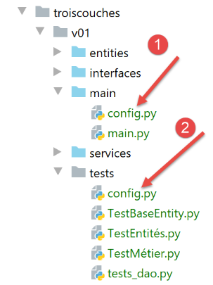
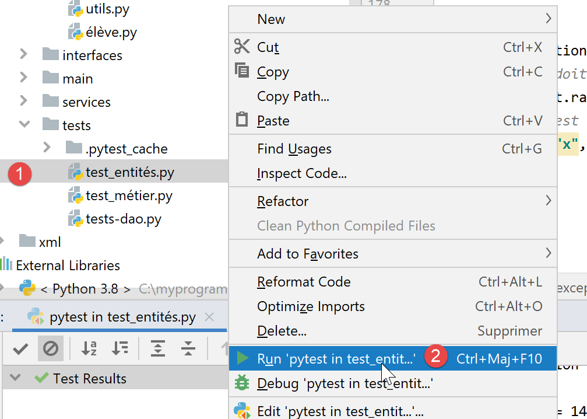
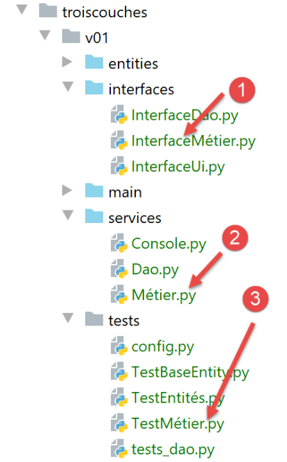
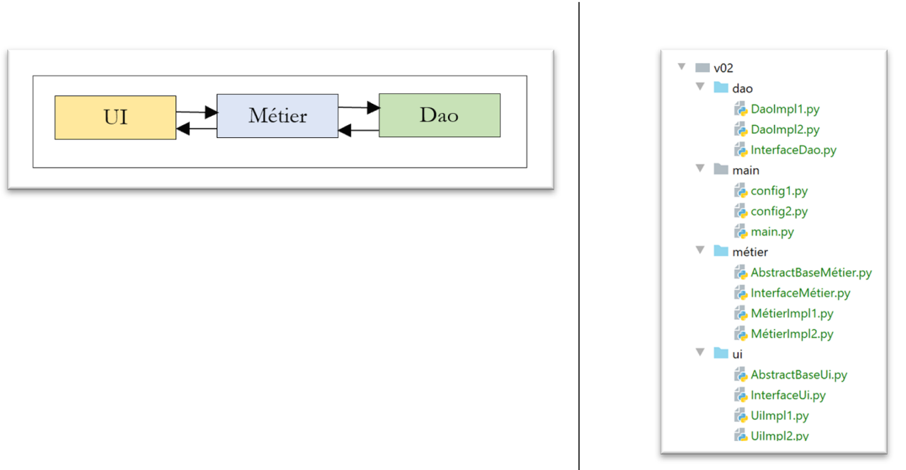
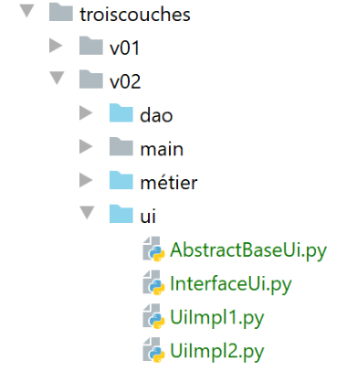
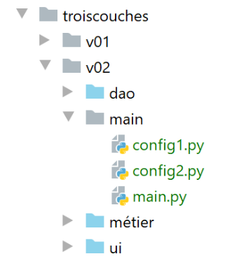

14. الهندسة الطبقية والبرمجة عبر الواجهات
14.1. مقدمة
نقترح كتابة تطبيق يسمح بعرض درجات طلاب إحدى المدارس الإعدادية. يمكن أن يكون لهذا التطبيق بنية متعددة الطبقات:

- الطبقة [ui] (واجهة المستخدم) هي الطبقة التي تتفاعل مع مستخدم التطبيق؛
- تقوم الطبقة [métier] بتنفيذ قواعد إدارة التطبيق، مثل حساب الراتب أو الفاتورة. تستخدم هذه الطبقة البيانات الواردة من المستخدم عبر الطبقة [présentation]، والبيانات الواردة من الطبقة SGBD عبر الطبقة [dao]؛
- تدير الطبقة [dao] (كائنات الوصول إلى البيانات) الوصول إلى بيانات الطبقة SGBD (نظام إدارة قواعد البيانات).
هذه هي البنية التي تم استخدامها في |دورة Python 2|. يمكن أيضًا إدخال نسخة معدلة:

والاختلافات عن بنية الطبقات السابقة هي كما يلي:
- يُقوم البرنامج النصي الرئيسي المسمى [main] المذكور أعلاه بتنظيم إنشاء مثيلات الطبقات؛
- لم تعد الطبقات [ui, métier, dao] تتواصل بالضرورة فيما بينها. وإذا لزم الأمر، فإن البرنامج النصي [main] يزودها بمراجع الطبقات التي تحتاجها؛
يتم تنظيم الكود هنا في مراكز اختصاصات بقيادة «قائد الأوركسترا»:
- المنسق هو البرنامج النصي الرئيسي [main]؛
- الطبقات [ui] و [dao] و [métier] هي مراكز الاختصاص؛
يمكن أن نطلق على هذا التنظيم اسم «التنظيم الأوركسترالي».
14.2. المثال 1
سنقوم بتوضيح بنية الطبقات باستخدام تطبيق بسيط يعمل على وحدة التحكم:
- لن تكون هناك قاعدة بيانات؛
- ستدير الطبقة [dao] الكيانات Elève و Classe و Matière و Note، مما يتيح إدارة درجات الطلاب؛
- ستسمح الطبقة [métier] بحساب المؤشرات على درجات طالب معين؛
- الطبقة [ui] ستكون تطبيقًا يعمل على وحدة التحكم ويعرض نتائج الطلاب؛
مشروع PyCharm الخاص بالتطبيق هو كما يلي:
 |
ملاحظة: المجلدات باللون الأزرق هي جزء من [Sources Root] التابع لمشروع PyCharm.
14.2.1. كيانات التطبيق
سنطلق مصطلح «الكيانات» على الفئات التي تتمثل وظيفتها الوحيدة في تغليف البيانات. ويمكن استخدام القواميس لتحقيق ذلك. وتكمن فائدة الفئة في إتاحة اختبار صحة البيانات المخزنة في الكائن وتوفير طريقة تحدد هوية الكائن في شكل سلسلة أحرف.
 |
14.2.1.1. الكيان [Classe]
يمثل الكيان [Classe] (Classe.py) فئة من فئات الكلية:
# عمليات الاستيراد
from BaseEntity import BaseEntity
from MyException import MyException
from Utils import Utils
class Classe(BaseEntity):
# السمات المستبعدة من حالة الفئة
excluded_keys = []
# خصائص الفئة
@staticmethod
def get_allowed_keys() -> list:
# id: معرّف الفئة
# الاسم: اسم الفئة
return BaseEntity.get_allowed_keys() + ["nom"]
# مُسترد
@property
def nom(self: object) -> str:
return self.__nom
# المعلمات المُعيّنة
@nom.setter
def nom(self: object, nom: str):
# يجب أن يكون الاسم سلسلة أحرف غير فارغة
if Utils.is_string_ok(nom):
self.__nom = nom
else:
raise MyException(11, f"Le nom de la classe {self.id} doit être une chaîne de caractères non vide")
ملاحظات
- السطر 7: الكيان [Classe] مشتق من الكيان [BaseEntity] الذي تمت دراسته في الفقرة |الفصل BaseEntity|؛
- الأسطر 11-16: تُعرَّف الفئة برقم id ورقم nom (السطر 16). يتم توفير الخاصية [id] بواسطة الفئة [BaseEntity]، بينما يتم توفير الاسم بواسطة الفئة [Classe]؛
- الأسطر 18-30: دالة الحصول/التعيين للسمة [nom]؛
14.2.1.2. الكيان [Matière]
الفئة [Matière] (matière.py) هي كما يلي:
# الاستيرادات
from BaseEntity import BaseEntity
from MyException import MyException
from Utils import Utils
class Matière(BaseEntity):
# السمات المستبعدة من حالة الفئة
excluded_keys = []
# خصائص الفئة
@staticmethod
def get_allowed_keys() -> list:
# id: معرّف المادة
# الاسم: اسم المادة
# المعامل: معامل المادة
return BaseEntity.get_allowed_keys() + ["nom", "coefficient"]
# مُسترد
@property
def nom(self: object) -> str:
return self.__nom
@property
def coefficient(self: object) -> float:
return self.__coefficient
# المعلمات المُعيّنة
@nom.setter
def nom(self: object, nom: str):
# يجب أن يكون الاسم سلسلة أحرف غير فارغة
if Utils.is_string_ok(nom):
self.__nom = nom
else:
raise MyException(21, f"Le nom de la matière {self.id} doit être une chaîne de caractères non vide")
@coefficient.setter
def coefficient(self, coefficient: float):
# يجب أن يكون المعامل عددًا حقيقيًا >=0
erreur = False
if isinstance(coefficient, (int, float)):
if coefficient >= 0:
self.__coefficient = coefficient
else:
erreur = True
else:
erreur = True
# خطأ؟
if erreur:
raise MyException(22, f"Le coefficient de la matière {self.nom} doit être un réel >=0")
ملاحظات
- السطر 7: الفئة [Classe] مشتقة من الفئة [BaseEntity]؛
- الأسطر 11-17: تُعرَّف المادة برقمها [id]، واسمها [nom]، ومعاملها [coefficient]؛
- الأسطر 19-50: دوال الحصول (getters) / التعيين (setters) لسمات الفئة؛
14.2.1.3. الكيان [Elève]
الفئة [Elève] (élève.py) هي كما يلي:
# استيرادات
from BaseEntity import BaseEntity
from Classe import Classe
from MyException import MyException
from Utils import Utils
class Elève(BaseEntity):
# السمات المستبعدة من حالة الفئة
excluded_keys = []
# خصائص الفئة
@staticmethod
def get_allowed_keys() -> list:
# id: معرّف الطالب
# اللقب: لقب الطالب
# الاسم الأول: الاسم الأول للطالب
# الصف: الصف الذي ينتمي إليه الطالب
return BaseEntity.get_allowed_keys() + ["nom", "prénom", "classe"]
# مُستردات
@property
def nom(self: object) -> str:
return self.__nom
@property
def prénom(self: object) -> str:
return self.__prénom
@property
def classe(self: object) -> Classe:
return self.__classe
# وظائف التعيين
@nom.setter
def nom(self: object, nom: str) -> str:
# يجب أن يكون الاسم سلسلة أحرف غير فارغة
if Utils.is_string_ok(nom):
self.__nom = nom
else:
raise MyException(41, f"Le nom de l'élève {self.id} doit être une chaîne de caractères non vide")
@prénom.setter
def prénom(self: object, prénom: str) -> str:
# الاسم الأول يجب أن يكون سلسلة أحرف غير فارغة
if Utils.is_string_ok(prénom):
self.__prénom = prénom
else:
raise MyException(42, f"Le prénom de l'élève {self.id} doit être une chaîne de caractères non vide")
@classe.setter
def classe(self: object, value):
try:
# يُتوقع نوع «فئة»
if isinstance(value, Classe):
self.__classe = value
# أو نوع dict
elif isinstance(value,dict):
self.__classe=Classe().fromdict(value)
# أو نوع json
elif isinstance(value,str):
self.__classe = Classe().fromjson(value)
except BaseException as erreur:
raise MyException(43, f"L'attribut [{value}] de l'élève {self.id} doit être de type Classe ou dict ou json. Erreur : {erreur}")
ملاحظات
- السطر 9: الفئة [Elève] مشتقة من الفئة [BaseEntity]؛
- الأسطر 13-20: يتم تعريف الطالب برقمه [id]، واسمه [nom]، واسمه الأول [prénom]، وفصله [classe]. هذا المعامل الأخير هو مرجع إلى كائن [Classe]؛
- الأسطر 22-65: دالات الحصول (getters) / التعيين (setters) لسمات الفئة؛
14.2.1.4. الكيان [Note]
الفئة [Note] (note.py) هي كما يلي:
# استيرادات
from BaseEntity import BaseEntity
from Elève import Elève
from Matière import Matière
from MyException import MyException
class Note(BaseEntity):
# السمات المستبعدة من حالة الفئة
excluded_keys = []
# خصائص الفئة
@staticmethod
def get_allowed_keys() -> list:
# id: معرّف الملاحظة
# القيمة: الدرجة نفسها
# الطالب: الطالب (من النوع «طالب») المعني بالدرجة
# المادة: المادة (من النوع «مادة») التي تتعلق بها الدرجة
# وبالتالي، فإن كائن «Note» يمثل الدرجة التي حصل عليها الطالب في مادة ما
return BaseEntity.get_allowed_keys() + ["valeur", "élève", "matière"]
# وظائف الاسترجاع
@property
def valeur(self: object) -> float:
return self.__valeur
@property
def élève(self: object) -> Elève:
return self.__élève
@property
def matière(self: object) -> Matière:
return self.__matière
# دالات الاسترجاع
@valeur.setter
def valeur(self: object, valeur: float):
# يجب أن تكون الدرجة عددًا حقيقيًّا يتراوح بين 0 و20
if isinstance(valeur, (int, float)) and 0 <= valeur <= 20:
self.__valeur = valeur
else:
raise MyException(31,
f"L'attribut {valeur} de la note {self.id} doit être un nombre dans l'intervalle [0,20]")
@élève.setter
def élève(self: object, value):
try:
# يُتوقع أن يكون النوع «طالب»
if isinstance(value, Elève):
self.__élève = value
# أو نوع «dict»
elif isinstance(value, dict):
self.__élève = Elève().fromdict(value)
# أو نوع json
elif isinstance(value, str):
self.__élève = Elève().fromjson(value)
except BaseException as erreur:
raise MyException(32,
f"L'attribut [{value}] de la note {self.id} doit être de type Elève ou dict ou json. Erreur : {erreur}")
@matière.setter
def matière(self: object, value):
try:
# يُتوقع أن يكون النوع «Matière»
if isinstance(value, Matière):
self.__matière = value
# أو نوع dict
elif isinstance(value, dict):
self.__matière = Matière().fromdict(value)
# أو نوع json
elif isinstance(value, str):
self.__matière = Matière().fromjson(value)
except BaseException as erreur:
raise MyException(33,
f"L'attribut [{value}] de la note {self.id} doit être de type Matière ou dict ou json. Erreur : {erreur}")
ملاحظات
- السطر 8: الفئة [Note] مشتقة من الفئة [BaseEntity]؛
- الأسطر 12-20: يتم تمييز الكائن [Note] برقمه [id]، وقيمة الدرجة [valeur]، ومرجع [élève] للطالب الحاصل على هذه الدرجة، ومرجع للمادة [matière] التي تتعلق بها الدرجة؛
- الأسطر 22-75: دالات الحصول (getters) / التعيين (setters) لسمات الفئة؛
14.2.2. تكوين التطبيق
 |
يقوم الملف [config.py] بتكوين بيئة البرنامج النصي الرئيسي [main] (1) وكذلك بيئة الاختبارات (2). تحتوي جميع هذه البرامج النصية على تعليمة [import config] في بداية الكود. تجدر الإشارة إلى أن المجلد الذي يحتوي على البرنامج النصي موضوع الأمر [python script] يصبح تلقائيًا جزءًا من Python Path.Si؛ وبالتالي، فإن [config] موجود في نفس المجلد الذي توجد فيه البرامج النصية التي تحتوي على الأمر [import config]، لذا سيتم العثور عليه. الملفان [1] و [2] متطابقان هنا. وقد لا يكون الأمر كذلك.
الملف [config.sys] هو التالي:
def configure():
import os
# المسار المطلق لمجلد هذا البرنامج النصي
script_dir = os.path.dirname(os.path.abspath(__file__))
# root_dir
root_dir="C:/Data/st-2020/dev/python/cours-2020/python3-flask-2020/classes"
# التبعيات المطلقة
absolute_dependencies=[
# المجلدات المحلية التي تحتوي على الفئات والواجهات
f"{root_dir}/02/entities",
f"{script_dir}/../entities",
f"{script_dir}/../interfaces",
f"{script_dir}/../services",
]
# تحديث مسار النظام
from myutils import set_syspath
set_syspath(absolute_dependencies)
# تجهيز التكوين
return {}
- الأسطر 11-14: المجلدات التي يجب أن تكون جزءًا من مسار Python (sys.path)؛
- يتيح المجلد [f"{root_dir}/02/entities"] الوصول إلى الفئات [BaseEntity] و [MyException]؛
- يتيح المجلد [f"{script_dir}/../entities"] الوصول إلى الفئات [Elève] و[Classe] و[Matière] و[Note]؛
- يتيح المجلد [f"{script_dir}/../interfaces",] الوصول إلى واجهات التطبيق؛
- المجلد [f"{script_dir}/../services"] يتيح الوصول إلى الفئات التي تنفذ الواجهات؛
14.2.3. اختبارات الكيانات
 |
سنقوم هنا بكتابة اختبارات يتم تنفيذها بواسطة أداة تسمى [unittest]. تأتي أداة PyCharm مزودة بعدة أطر عمل للاختبار. ويتم اختيار أحدها من خلال إعدادات أداة PyCharm:

- في [4]، تتوفر عدة أطر عمل للاختبار:

14.2.3.1. فئة الاختبارات [TestBaseEntity]
سيكون نص الاختبار [TestBaseEntity] كما يلي:
import unittest
# تكوين التطبيق
import config
config = config.configure()
class TestBaseEntity (unittest.TestCase):
def test_note1(self):
# عمليات الاستيراد
from Note import Note
from Elève import Elève
from Classe import Classe
from Matière import Matière
# إنشاء ملاحظة من سلسلة jSON
note = Note().fromjson(
'{"id": 8, "value": 12, "student": {"id": 42, "last_name": "last_name4", "first_name": "first_name4", "الصف": {"id": 2, "الاسم": "الصف2"}}, "المادة": {"id": 2, "الاسم": "المادة2", "المعامل": 2}}')
# عمليات التحقق
self.assertIsInstance(note, Note)
self.assertIsInstance(note.élève, Elève)
self.assertIsInstance(note.élève.classe, Classe)
self.assertIsInstance(note.matière, Matière)
def test_note2(self):
# عمليات الاستيراد
from Note import Note
from Elève import Elève
from Classe import Classe
from Matière import Matière
# إنشاء درجة من قاموس
note = Note().fromdict(
{"id": 8, "valeur": 12, "élève": {"id": 42, "nom": "nom4", "prénom": "prénom4",
"classe": {"id": 2, "nom": "classe2"}},
"matière": {"id": 2, "nom": "matière2", "coefficient": 2}})
# عمليات التحقق
self.assertIsInstance(note, Note)
self.assertIsInstance(note.élève, Elève)
self.assertIsInstance(note.élève.classe, Classe)
self.assertIsInstance(note.matière, Matière)
if __name__ == '__main__':
unittest.main()
ملاحظات
- السطر 1: يتم استيراد الوحدة النمطية [unittest] التي ستوفر طرق الاختبار المختلفة؛
- الأسطر 3-6: يتم تكوين التطبيق بحيث يتم العثور على الفئات اللازمة للاختبارات؛
- السطر 9: يجب أن تمتد فئة الاختبار [unittest] من الفئة [unittest.TestCase]؛
- السطران 11 و27: يجب أن تبدأ أسماء دوال الاختبار بـ [test] وإلا فلن يتم التعرف عليها؛
- الأسطر 13-16: يتم استيراد الفئات المطلوبة؛
- في فئة الاختبار هذه، نريد التحقق من سلوك الأسلوبين [BaseEntity.fromdict] (السطر 34) و [BaseEntity.fromjson] (السطر 18). تحتوي الفئة [Note] على خصائص تمثل إشارات إلى فئات أخرى. نريد التحقق من أن الطريقتين السابقتين تنشئان كائنات [Note] صالحة؛
- السطر 18: يتم إنشاء كائن من نوع [Note] انطلاقًا من كائن من نوع jSON؛
- السطر 21: نتحقق من أن الكائن الذي تم إنشاؤه هو بالفعل من النوع [Note]. الطريقة [assertIsInstance] هي طريقة تابعة للفئة [unittest.TestCase]، وهي الفئة الأم للفئة [TestBaseEntity]؛
- السطر 22: يتم التحقق من أن [note.élève] هو بالفعل من النوع [Elève]؛
- السطر 23: يتم التحقق من أن [note.élève.classe] هو بالفعل من النوع [Classe]؛
- السطر 24: نتحقق من أن [note.matière] هو بالفعل من النوع [Matière]؛
- الأسطر 33-42: نفعل الشيء نفسه مع الطريقة [BaseEntity.fromdict]؛
هناك عدة طرق لتنفيذ الاختبارات:
 |
- في [1-2]، يتم تنفيذ [TestBaseEntity] باستخدام إطار العمل [UnitTest]؛
- في [3-5]، تفشل الاختبارات. يشير [UnitTests] إلى أنه لم يعثر على أي اختبار لتنفيذه؛
يرجع فشل الاختبارات إلى تنظيم كود [TestBaseEntity]:
import unittest
# تكوين التطبيق
import config
config = config.configure()
class TestBaseEntity(unittest.TestCase):
ما يعيق إطار العمل [UnitTest] هو وجود كود قابل للتنفيذ، في الأسطر 3-6، قبل تعريف فئة الاختبار في السطر 9.
لذلك، نعيد تنظيم الكود على النحو التالي:
import unittest
class TestBaseEntity(unittest.TestCase):
def setUp(self):
# يتم تكوين التطبيق
import config
config.configure()
def test_note1(self):
…
def test_note2(self):
…
if __name__ == '__main__':
unittest.main()
- الأسطر 6-10: يتم تعريف دالة [setUp]. لهذه الدالة دور خاص: يتم تنفيذها قبل كل دالة اختبار (test_note1، test_note2)؛
وبعد ذلك، يؤدي تنفيذ الفئة [TestBaseEntity] إلى النتائج التالية:
 |
هذه المرة تم تنفيذ طريقتي الاختبار ونجحت الاختبارات.
لنرى ما يحدث عندما يفشل أحد الاختبارات. لنعدّل كود [test_note1] بالطريقة التالية:
def test_note1(self):
# خطأ متعمد - التحقق من أن 1==2
self.assertEqual(1,2)
# عمليات الاستيراد
from Note import Note
…
- السطر 2: نتحقق من أن 1==2؛
وتكون نتائج التنفيذ كما يلي:
 |
يمكن معرفة سبب الخطأ بالنقر على الاختبار الفاشل [2]:
 |
- في [7-8]، سبب الخطأ؛
هناك طريقة أخرى لتنفيذ مجموعة اختبارات، وهي تنفيذها في محطة طرفية:
 |
(venv) C:\Data\st-2020\dev\python\cours-2020\python3-flask-2020\troiscouches\v01\tests>python -m unittest TestBaseEntity.py
..
----------------------------------------------------------------------
Ran 2 tests in 0.026s
OK
تشير السطر 6 إلى نجاح الاختبارين (تمت إزالة الخطأ 1==2)؛
وأخيرًا، هناك طريقة ثالثة لتنفيذ فئة الاختبارات [TestBaseEntity]، دائمًا في محطة طرفية، وهي كما يلي. ننهي فئة الاختبارات بالأسطر 6-7 التالية؛
…
self.assertIsInstance(note.élève.classe, Classe)
self.assertIsInstance(note.matière, Matière)
if __name__ == '__main__':
unittest.main()
- السطر 6: المتغير [__name__] هو الاسم المُعطى للنص البرمجي الذي يتم تنفيذه. عندما يكون البرنامج النصي هو الذي يتم تشغيله بواسطة الأمر [python script.py]، فإن المتغير [__name__] يساوي [__main__] (حرفان مخطوطان قبل وبعد المعرف). وبالتالي، لا يتم تنفيذ السطر 7 إلا عندما يتم تشغيل البرنامج النصي [TestBaseEntity] بواسطة الأمر [python TestBaseEntity.py]. تقوم التعليمات [unittest.main()] بتشغيل البرنامج النصي عبر إطار العمل [UnitTest]. وفيما يلي مثال على ذلك:
(venv) C:\Data\st-2020\dev\python\cours-2020\python3-flask-2020\troiscouches\v01\tests>python TestBaseEntity.py
..
----------------------------------------------------------------------
Ran 2 tests in 0.013s
OK
14.2.3.2. فئة الاختبارات [TestEntités]
فئة الاختبارات [TestEntités] هي كما يلي:
import unittest
class TestEntités(unittest.TestCase):
def setUp(self):
# يتم تكوين التطبيق
import config
config.configure()
def test_code1a(self):
# عمليات الاستيراد
from Elève import Elève
from MyException import MyException
# رمز الخطأ
code = None
try:
# معرف غير صالح
Elève().fromdict({"id": "x", "nom": "y", "prénom": "z", "classe": "t"})
except MyException as ex:
print(f"\ncode erreur={ex.code}, message={ex}")
code = ex.code
# التحقق
self.assertEqual(code, 1)
def test_code41(self):
# عمليات الاستيراد
from Elève import Elève
from MyException import MyException
# رمز الخطأ
code = None
try:
# اسم غير صالح
Elève().fromdict({"id": 1, "nom": "", "prénom": "z", "classe": "t"})
except MyException as ex:
print(f"\ncode erreur={ex.code}, message={ex}")
code = ex.code
# التحقق
self.assertEqual(code, 41)
def test_code42(self):
# عمليات الاستيراد
from Elève import Elève
from MyException import MyException
# رمز الخطأ
code = None
try:
# اسم غير صالح
Elève().fromdict({"id": 1, "nom": "y", "prénom": "", "classe": "t"})
except MyException as ex:
print(f"\ncode erreur={ex.code}, message={ex}")
code = ex.code
# التحقق
self.assertEqual(code, 42)
def test_code43(self):
# الاستيراد
from Elève import Elève
from MyException import MyException
# رمز الخطأ
code = None
try:
# فئة غير صالحة
Elève().fromdict({"id": 1, "nom": "y", "prénom": "z", "classe": "t"})
except MyException as ex:
print(f"\ncode erreur={ex.code}, message={ex}")
code = ex.code
# التحقق
self.assertEqual(code, 43)
def test_code1b(self):
# استيرادات
from Classe import Classe
from MyException import MyException
# رمز الخطأ
code = None
try:
# معرف غير صالح
Classe().fromdict({"id": "x", "nom": "y"})
except MyException as ex:
print(f"\ncode erreur={ex.code}, message={ex}")
code = ex.code
# التحقق
self.assertEqual(code, 1)
def test_code11(self):
# عمليات الاستيراد
from Classe import Classe
from MyException import MyException
# رمز الخطأ
code = None
try:
# اسم غير صالح
Classe().fromdict({"id": 1, "nom": ""})
except MyException as ex:
code = ex.code
# التحقق
self.assertEqual(code, 11)
def test_code1c(self):
# عمليات الاستيراد
from Matière import Matière
from MyException import MyException
# رمز الخطأ
code = None
try:
# معرف غير صالح
Matière().fromdict({"id": "x", "nom": "y", "coefficient": "t"})
except MyException as ex:
print(f"\ncode erreur={ex.code}, message={ex}")
code = ex.code
# التحقق
self.assertEqual(code, 1)
def test_code21(self):
# عمليات الاستيراد
from Matière import Matière
from MyException import MyException
# رمز الخطأ
code = None
try:
# اسم غير صالح
Matière().fromdict({"id": "1", "nom": "", "coefficient": "t"})
except MyException as ex:
print(f"\ncode erreur={ex.code}, message={ex}")
code = ex.code
# التحقق
self.assertEqual(code, 21)
def test_code22(self):
# عمليات الاستيراد
from Matière import Matière
from MyException import MyException
# رمز الخطأ
code = None
try:
# معامل غير صالح
Matière().fromdict({"id": 1, "nom": "y", "coefficient": "t"})
except MyException as ex:
print(f"\ncode erreur={ex.code}, message={ex}")
code = ex.code
# التحقق
self.assertEqual(code, 22)
def test_code1d(self):
# عمليات الاستيراد
from Note import Note
from MyException import MyException
# رمز الخطأ
code = None
try:
# معرف غير صالح
Note().fromdict({"id": "x", "valeur": "x", "élève": "y", "matière": "z"})
except MyException as ex:
print(f"\ncode erreur={ex.code}, message={ex}")
code = ex.code
# التحقق
self.assertEqual(code, 1)
def test_code31(self):
# عمليات الاستيراد
from Note import Note
from MyException import MyException
# رمز الخطأ
code = None
try:
# قيمة غير صالحة
Note().fromdict({"id": 1, "valeur": "x", "élève": "y", "matière": "z"})
except MyException as ex:
print(f"\ncode erreur={ex.code}, message={ex}")
code = ex.code
# التحقق
self.assertEqual(code, 31)
def test_code32(self):
# عمليات الاستيراد
from Note import Note
from MyException import MyException
# رمز الخطأ
code = None
try:
# طالب غير صالح
Note().fromdict({"id": 1, "valeur": 10, "élève": "y", "matière": "z"})
except MyException as ex:
print(f"\ncode erreur={ex.code}, message={ex}")
code = ex.code
# التحقق
self.assertEqual(code, 32)
def test_code33(self):
# الاستيراد
from Elève import Elève
from Note import Note
from Classe import Classe
from MyException import MyException
# رمز الخطأ
code = None
try:
# المادة غير صالحة
classe = Classe().fromdict({"id": 1, "nom": "x"})
élève = Elève().fromdict({"id": 1, "nom": "a", "prénom": "b", "classe": classe})
Note().fromdict({"id": 1, "valeur": 10, "élève": élève, "matière": "z"})
except MyException as ex:
print(f"\ncode erreur={ex.code}, message={ex}")
code = ex.code
# التحقق
self.assertEqual(code, 33)
def test_exception(self):
# عمليات الاستيراد
from Elève import Elève
# يجب أن يُطلق الاختبار النوع [MyException] لكي ينجح
from MyException import MyException
with self.assertRaises(MyException):
# الاختبار
Elève().fromdict({"id": "x", "nom": "y", "prénom": "z", "classe": "t"})
if __name__ == '__main__':
unittest.main()
- يهدف البرنامج النصي للاختبار إلى اختبار مُعيّنات الفئات: التحقق من أنه لا يمكن تعيين قيم غير صحيحة لسمات الكيانات المختلفة؛
- الأسطر 11-24: يتم اختبار عدم إمكانية تمرير معرّف غير صالح إلى طالب. ونظرًا لأننا نمرر القيمة 'x'، في السطر 16، كمعرّف للطالب، فإننا نتوقع حدوث استثناء. لذا، من المفترض أن ننتقل إلى الأسطر 20-22؛
- السطر 21: عرض رسالة الخطأ؛
- السطر 22: يتم استرداد رمز الخطأ (انظر الفقرة |الكيان MyException|)؛
- السطر 24: نتحقق (assert) من أن رمز الخطأ هو 1. هنا، نتحقق من أمرين:
- أنه قد حدث خطأ بالفعل؛
- أن رمز الخطأ هو 1؛
- يتم تكرار هذه العملية مع الدوال الموجودة في الأسطر 24-213؛
- الأسطر 215-222: يتم اختبار ما إذا كانت إحدى الإجراءات تثير استثناءً من نوع معين؛
- السطر 220: يُشار إلى أن الاختبار ناجح إذا أثار استثناءً من النوع [MyException]؛
النتائج
يتم تنفيذ البرنامج النصي للاختبار:
 |
النتائج التي تم الحصول عليها هي كما يلي:
Testing started at 09:39 ...
C:\Data\st-2020\dev\python\cours-2020\python3-flask-2020\venv\Scripts\python.exe "C:\Program Files\JetBrains\PyCharm Community Edition 2020.1.2\plugins\python-ce\helpers\pycharm\_jb_unittest_runner.py" --path C:/Data/st-2020/dev/python/cours-2020/python3-flask-2020/troiscouches/v01/tests/TestEntités.py
Launching unittests with arguments python -m unittest C:/Data/st-2020/dev/python/cours-2020/python3-flask-2020/troiscouches/v01/tests/TestEntités.py in C:\Data\st-2020\dev\python\cours-2020\python3-flask-2020\troiscouches\v01\tests
code erreur=1, message=MyException[1, L'identifiant d'une entité <class 'Elève.Elève'> doit être un entier >=0]
code erreur=1, message=MyException[1, L'identifiant d'une entité <class 'Classe.Classe'> doit être un entier >=0]
code erreur=1, message=MyException[1, L'identifiant d'une entité <class 'Matière.Matière'> doit être un entier >=0]
code erreur=1, message=MyException[1, L'identifiant d'une entité <class 'Note.Note'> doit être un entier >=0]
code erreur=21, message=MyException[21, Le nom de la matière 1 doit être une chaîne de caractères non vide]
code erreur=22, message=MyException[22, Le coefficient de la matière y doit être un réel >=0]
code erreur=31, message=MyException[31, L'attribut x de la note 1 doit être un nombre dans l'intervalle [0,20]]
code erreur=32, message=MyException[32, L'attribut [y] de la note 1 doit être de type Elève ou dict ou json. Erreur : Expecting value: line 1 column 1 (char 0)]
code erreur=33, message=MyException[33, L'attribut [z] de la note 1 doit être de type Matière ou dict ou json. Erreur : Expecting value: line 1 column 1 (char 0)]
code erreur=41, message=MyException[41, Le nom de l'élève 1 doit être une chaîne de caractères non vide]
code erreur=42, message=MyException[42, Le prénom de l'élève 1 doit être une chaîne de caractères non vide]
code erreur=43, message=MyException[43, L'attribut [t] de l'élève 1 doit être de type Classe ou dict ou json. Erreur : Expecting value: line 1 column 1 (char 0)]
Ran 14 tests in 0.040s
OK
Process finished with exit code 0
هنا، نجحت جميع الاختبارات
14.2.4. الطبقة [dao]

الطبقة [dao] تُنفذ واجهة [InterfaceDao] [1]. ويتم تنفيذ هذه الواجهة بواسطة الفئة [Dao] (2). يقوم البرنامج النصي [tests_dao] (3) باختبار أساليب الطبقة [dao].
14.2.4.1. واجهة [InterfaceDao]
الواجهة هي عقد مبرم بين الكود المستدعي والكود المستدعى. والكود المستدعى هو الذي يوفر الواجهة:
 |
- لا يعرف الكود المستدعي [1] كيفية تنفيذ الكود المستدعى [3]. إنه لا يعرف سوى طريقة استدعائه. وتقوم واجهة [2] بإرشاده إلى ذلك. حيث تحدد هذه الواجهة عددًا معينًا من الأساليب/الوظائف التي يجب استخدامها للتفاعل مع الكود المستدعى. ويُطلق على هذه الواجهة أيضًا اسم API (واجهة برمجة التطبيقات)؛
ستوفر الطبقة [dao] الواجهة التالية:
- تُرجع [get_classes] قائمة الفصول الدراسية في المدرسة الإعدادية؛
- تُعرض [get_matières] قائمة المواد الدراسية التي تُدرَّس في المدرسة الإعدادية؛
- [get_élèves] تعرض قائمة طلاب المدرسة الإعدادية؛
- [get_notes] يعرض قائمة الدرجات لجميع الطلاب؛
- [get_notes_for_élève_by_id] يعرض درجات طالب معين؛
- [get_élève_by_id] يعرض طالبًا محددًا برقمه؛
لن يستخدم الكود المستدعي سوى هذه الطرق. ولا داعي لأن يعرف كيفية تنفيذها. وبذلك يمكن أن تأتي البيانات من مصادر مختلفة (مخزنة ثابتًا، أو من قاعدة بيانات، أو من ملفات نصية...) دون أن يؤثر ذلك على الكود المستدعي. وهذا ما يُسمى بالبرمجة عبر الواجهات.
يحتوي Python 3 على مفهوم قريب من مفهوم الواجهة: الفئة المجردة. سنستخدمها. سنجمع واجهات هذا المثال في المجلد [interfaces].
نُعرِّف فئةً مجردةً باسم [InterfaceDao] (InterfaceDao.py) للطبقة [dao]:
# الاستيرادات
from abc import ABC, abstractmethod
# واجهة Dao
from Elève import Elève
class InterfaceDao(ABC):
# قائمة الفئات
@abstractmethod
def get_classes(self: object) -> list:
pass
# قائمة الطلاب
@abstractmethod
def get_élèves(self: object) -> list:
pass
# قائمة المواد
@abstractmethod
def get_matières(self: object) -> list:
pass
# قائمة الدرجات
@abstractmethod
def get_notes(self: object) -> list:
pass
# قائمة درجات الطالب
@abstractmethod
def get_notes_for_élève_by_id(self: object, élève_id: int) -> list:
pass
# البحث عن طالب باستخدام معرّفه
@abstractmethod
def get_élève_by_id(self, élève_id: int) -> Elève:
pass
ملاحظات:
- السطر 2: ABC = فئة أساسية مجردة. يتم استيراد الفئة ABC من الوحدة النمطية [abc]، بالإضافة إلى الزخرفة [abstractmethod] المستخدمة في الأسطر 10 و15 و20 و25 و30 و35؛
- السطر 8: تسمى الفئة المجردة [InterfaceDao] وهي مشتقة من الفئة [ABC]؛
- يتم تزيين أساليب الفئة المجردة بالزخرفة [@abstractmethod] التي تجعل من الأسلوب المزين بهذه الزخرفة أسلوبًا مجردًا: حيث لا يتم تعريف كوده. ومع ذلك، يتم إدراج كود فيه: الأمر [pass] الذي لا يقوم بأي شيء؛
- لا يمكن إنشاء مثيل للفئة المجردة [InterfaceDao]. ولا يمكن إنشاء مثيلات إلا للفئات المشتقة من [InterfaceDao] التي قامت بتنفيذ جميع طرق [InterfaceDao]. لذا، إذا أنشأنا فئتين [Dao1] و [Dao2] مشتقتين من الفئة [InterfaceDao]، فستقوم كلتاهما بتنفيذ الطرق المجردة لـ [InterfaceDao]. وبالتالي يمكن القول إنهما تنفذان الواجهة [InterfaceDao]؛
- اللغات التي تُنفِّذ كلًّا من الواجهات والفئات المجردة تُعطِي الواجهة دورًا مختلفًا عن دور الفئة المجردة. فالواجهة لا تحتوي على سمات ولا يمكن إنشاء مثيل لها. ويمكن للفئة أن تُنفِّذ واجهةً ما عن طريق تعريف جميع طرقها؛
14.2.4.2. تنفيذ [Dao]
تُنفذ الفئة [Dao] (dao.py) الواجهة [InterfaceDao] بالطريقة التالية:
# استيراد الكيانات والواجهات
from Classe import Classe
from Elève import Elève
from InterfaceDao import InterfaceDao
from Matière import Matière
from MyException import MyException
from Note import Note
# الطبقة [dao] تنفذ الواجهة InterfaceDao
class Dao(InterfaceDao):
# منشئ
# يتم إنشاء قوائم ثابتة
def __init__(self):
# يتم إنشاء مثيلات للفئات
classe1 = Classe().fromdict({"id": 1, "nom": "classe1"})
classe2 = Classe().fromdict({"id": 2, "nom": "classe2"})
self.classes = [classe1, classe2]
# المواد
matière1 = Matière().fromdict({"id": 1, "nom": "matière1", "coefficient": 1})
matière2 = Matière().fromdict({"id": 2, "nom": "matière2", "coefficient": 2})
self.matières = [matière1, matière2]
# الطلاب
élève11 = Elève().fromdict({"id": 11, "nom": "nom1", "prénom": "prénom1", "classe": classe1})
élève21 = Elève().fromdict({"id": 21, "nom": "nom2", "prénom": "prénom2", "classe": classe1})
élève32 = Elève().fromdict({"id": 32, "nom": "nom3", "prénom": "prénom3", "classe": classe2})
élève42 = Elève().fromdict({"id": 42, "nom": "nom4", "prénom": "prénom4", "classe": classe2})
self.élèves = [élève11, élève21, élève32, élève42]
# درجات الطلاب في المواد المختلفة
note1 = Note().fromdict({"id": 1, "valeur": 10, "élève": élève11, "matière": matière1})
note2 = Note().fromdict({"id": 2, "valeur": 12, "élève": élève21, "matière": matière1})
note3 = Note().fromdict({"id": 3, "valeur": 14, "élève": élève32, "matière": matière1})
note4 = Note().fromdict({"id": 4, "valeur": 16, "élève": élève42, "matière": matière1})
note5 = Note().fromdict({"id": 5, "valeur": 6, "élève": élève11, "matière": matière2})
note6 = Note().fromdict({"id": 6, "valeur": 8, "élève": élève21, "matière": matière2})
note7 = Note().fromdict({"id": 7, "valeur": 10, "élève": élève32, "matière": matière2})
note8 = Note().fromdict({"id": 8, "valeur": 12, "élève": élève42, "matière": matière2})
self.notes = [note1, note2, note3, note4, note5, note6, note7, note8]
# -----------
# واجهة IDao
# -----------
ملاحظات:
- الأسطر 1-7: يتم استيراد الكيانات والواجهة [InterfaceDao]؛
- السطر 11: الفئة [Dao] مشتقة من الفئة المجردة [InterfaceDao]. ونقول إنها تنفذ الواجهة [InterfaceDao]؛
- السطر 14: لا تحتوي الدالة المنشئة على معلمات. وهي تنشئ أربع قوائم ثابتة:
- الأسطر 15-18: قائمة الفئات؛
- الأسطر 19-22: قائمة المواد الدراسية؛
- الأسطر 23-28: قائمة الطلاب؛
- الأسطر 29-38: قائمة الدرجات؛
- الأسطر 40-44: تنفيذ أساليب واجهة [Interface Dao]. هنا، لا نقوم بتعريفها لكي نرى رسالة الخطأ التي تصدرها لغة Python؛
قد يكون برنامج الاختبار كما يلي: [tests-dao.py]:
# يتم تكوين التطبيق
import config
config = config.configure()
# إنشاء مثيل لطبقة [dao]
from Dao import Dao
daoImpl = Dao()
# قائمة الفصول
for classe in daoImpl.get_classes():
print(classe)
# قائمة المواد
for matière in daoImpl.get_matières():
print(matière)
# قائمة الفصول
for élève in daoImpl.get_élèves():
print(élève)
# قائمة الدرجات
for note in daoImpl.get_notes():
print(note)
ملاحظة: البرنامج النصي [tests-dao.py] ليس اختبارًا لـ [unittest] لأنه لا يحتوي على أي طرق يبدأ اسمها بـ [test_].
التعليقات واضحة بذاتها. تستخدم الأسطر من 11 إلى 25 واجهة الطبقة [dao]. ولا توجد هنا أي افتراضات بشأن التنفيذ الفعلي للطبقة. في السطر 9، يتم إنشاء مثيل للطبقة [dao].
نتائج تنفيذ هذا البرنامج النصي هي كما يلي:
C:\Data\st-2020\dev\python\cours-2020\python3-flask-2020\venv\Scripts\python.exe C:/Data/st-2020/dev/python/cours-2020/python3-flask-2020/troiscouches/v01/tests/tests_dao.py
Traceback (most recent call last):
File "C:/Data/st-2020/dev/python/cours-2020/python3-flask-2020/troiscouches/v01/tests/tests_dao.py", line 9, in <module>
daoImpl = Dao()
TypeError: Can't instantiate abstract class Dao with abstract methods get_classes, get_matières, get_notes, get_notes_for_élève_by_id, get_élève_by_id, get_élèves
Process finished with exit code 1
نلاحظ حدوث خطأ فور إنشاء مثيل للفئة [Dao] (السطر 3 أعلاه). يُخبرنا مُترجم Python 3 أنه لا يمكنه إنشاء مثيل للفئة، وذلك لأننا لم نُعرّف الطرق المجردة [get_classes, get_matières, get_notes, get_notes_for_élève_by_id, get_élève_by_id, get_élèves].
يحتوي Pycharm أيضًا على مفهوم الفئة المجردة ويقترح علينا تعريف طرقها:
 |
- في [1]، انقر بزر الماوس الأيمن على الكود؛
- إلى [2-3]، اختر [Generate / Implement Methods] لتنفيذ الطرق المفقودة في الفئة [Dao]؛
- في [4]، اختر الطرق المراد تنفيذها، وهي جميعها في هذه الحالة؛
وبعد ذلك، يتم استكمال الفئة [Dao] بالفئة PyCharm بالطريقة التالية:
# -----------
# واجهة IDao
# -----------
def get_classes(self: object) -> list:
pass
def get_élèves(self: object) -> list:
pass
def get_matières(self: object) -> list:
pass
def get_notes(self: object) -> list:
pass
def get_notes_for_élève_by_id(self: object, élève_id: int) -> list:
pass
def get_élève_by_id(self, élève_id: int) -> Elève:
pass
نستكمل الفئة [Dao] بالطريقة التالية:
# -----------
# واجهة IDao
# -----------
# قائمة الفصول
def get_classes(self) -> list:
return self.classes
# قائمة المواد
def get_matières(self) -> list:
return self.matières
# قائمة الطلاب
def get_élèves(self) -> list:
return self.élèves
# قائمة الدرجات
def get_notes(self) -> list:
return self.notes
def get_notes_for_élève_by_id(self, élève_id: int) -> dict:
# البحث عن الطالب
élève = self.get_élève_by_id(élève_id)
# استرداد درجاته
notes = list(filter(lambda n: n.élève.id == élève_id, self.get_notes()))
# عرض النتيجة
return {"élève": élève, "notes": notes}
def get_élève_by_id(self, élève_id: int) -> Elève:
# تصفية الطلاب
élèves = list(filter(lambda e: e.id == élève_id, self.get_élèves()))
# هل تم العثور عليه؟
if not élèves:
raise MyException(10, f"L'élève d'identifiant {élève_id} n'existe pas")
# النتيجة
return élèves[0]
- لا تثير الأسطر 5-19 أي صعوبات؛
- الأسطر 29-36: الطريقة التي تُرجع الطالب الذي يتم تمرير رقمه. إذا كان الطالب غير موجود، يتم إثارة استثناء؛
- السطر 31: تسمح الدالة [filter] بتصفية قائمة:
- المعلمة الأولى هي معيار التصفية؛
- المعلمة الثانية هي القائمة المراد تصفية، وهي في هذه الحالة قائمة الطلاب؛
- السطر 31: يتم تنفيذ معيار تصفية القائمة باستخدام الدالة [f(e :Elève)->bool]. تُطبق هذه الدالة على كل عنصر من عناصر القائمة المراد تصفية. إذا استوفى العنصر معيار التصفية، يتم الاحتفاظ به في القائمة المُصفّاة، وإلا يتم استبعاده منها. يمكننا هنا إما:
- تحديد اسم الدالة f وتنفيذها في مكان آخر. عندئذٍ يصبح استدعاء الدالة [filter] هو [filter(f,self.get_élèves()]؛
- تحديد تعريف الدالة f. عندئذٍ يصبح استدعاء الدالة [filter] هو [filter(f(e :Elève){…},self.get_élèves()]، حيث تمثل [e] عنصرًا من القائمة المُصفاة، أي طالبًا. وهذا ما تم فعله هنا. سيكون تعريف الدالة f هنا هو [f(e :Elève){return e.id==élève_id)]: لا يتم اختيار الطالب إلا إذا كان الرقم [id] غير مساوي للرقم المطلوب. يمكن استبدال هذه الدالة بدالة تُعرف باسم لامدا: [lambda e: e.id == élève_id]:
- e: تمثل معلمة الدالة f، وهي في هذه الحالة الطالب. يمكن استخدام أي اسم نريده؛
- e.id==élève_id هو معيار التصفية: لا يتم اختيار الطالب [e] إلا إذا كان رقمه [id] مطابقًا للرقم المطلوب؛
- السطر 31: تُرجع الدالة [filter] القائمة المُصفاة بنوع ليس هو النوع [list]، ولكنه يدعم التحويل إلى النوع [list]. وهذا ما نقوم به هنا باستخدام التعبير [list(liste filtrée)]؛
- السطران 33-34: إذا كانت القائمة المُصفاة فارغة، فهذا يعني أن الطالب المطلوب غير موجود. وعندئذٍ يتم إثارة استثناء؛
- السطر 36: إذا وصلنا إلى هنا، فهذا يعني أنه لم تحدث أي استثناءات. وعندها نعلم أننا حصلنا على قائمة تحتوي على عنصر واحد (لا يوجد طالبان يحملان الرقم نفسه [id]). لذا نُرجع العنصر الأول من القائمة؛
- الأسطر 21-27: يجب أن تُرجع الدالة [get_notes_for_élève_by_id] درجات الطالب الذي تم تمرير رقمه [id] إليها؛
- السطران 22-23: نبدأ بالبحث عن الطالب رقم [élève_id] باستخدام الطريقة [get_élève_by_id] التي قمنا بتعليقها للتو. قد تحدث استثناء إذا كان الطالب المطلوب غير موجود. ونظرًا لعدم وجود جملة try / catch حول الأمر الموجود في السطر 23، فسيتم تمرير الاستثناء إلى الكود المستدعي. وهذا هو المطلوب؛
- السطران 24-25: بمجرد استرداد الطالب، يتم استرداد جميع درجاته. يتم ذلك مرة أخرى باستخدام مرشح:
- المرشح هو [filter(critère, self_getnotes()]. وبالتالي، فإن القائمة المراد تصفية هي قائمة جميع الدرجات لجميع طلاب المدرسة الإعدادية؛
- يُعبر عن معيار التصفية باستخدام دالة [lambda]: lambda n: n.élève.id == élève_id. المعلمة n هي عنصر من القائمة المراد تصفية، أي علامة. يحتوي النوع [Note] على خاصية [élève] التي تمثل الطالب صاحب الدرجة. لذا يجب أن يكون [n.élève.id]، الذي يمثل رقم هذا الطالب، مساويًّا لرقم الطالب المطلوب؛
ثم نقوم بتنفيذ البرنامج النصي [tests-dao.py].
# يتم تكوين التطبيق
import config
config = config.configure()
# إنشاء مثيل لطبقة [dao]
from Dao import Dao
daoImpl = Dao()
# قائمة الفئات
for classe in daoImpl.get_classes():
print(classe)
# قائمة المواد
for matière in daoImpl.get_matières():
print(matière)
# قائمة الفصول
for élève in daoImpl.get_élèves():
print(élève)
# قائمة الدرجات
for note in daoImpl.get_notes():
print(note)
# طالب معين
print(daoImpl.get_élève_by_id(11))
# قائمة درجاته
dict1 = daoImpl.get_notes_for_élève_by_id(11)
print(f"élève n° 11 = {dict1['élève']}")
for note in dict1["notes"]:
print(f"note de l'élève n° 11 = {note}")
ونحصل عندئذٍ على النتائج التالية:
C:\Data\st-2020\dev\python\cours-2020\python3-flask-2020\venv\Scripts\python.exe C:/Data/st-2020/dev/python/cours-2020/python3-flask-2020/troiscouches/v01/tests/tests_dao.py
{"id": 1, "nom": "classe1"}
{"id": 2, "nom": "classe2"}
{"id": 1, "nom": "matière1", "coefficient": 1}
{"id": 2, "nom": "matière2", "coefficient": 2}
{"id": 11, "nom": "nom1", "prénom": "prénom1", "classe": {"id": 1, "nom": "classe1"}}
{"id": 21, "nom": "nom2", "prénom": "prénom2", "classe": {"id": 1, "nom": "classe1"}}
{"id": 32, "nom": "nom3", "prénom": "prénom3", "classe": {"id": 2, "nom": "classe2"}}
{"id": 42, "nom": "nom4", "prénom": "prénom4", "classe": {"id": 2, "nom": "classe2"}}
{"id": 1, "valeur": 10, "élève": {"id": 11, "nom": "nom1", "prénom": "prénom1", "classe": {"id": 1, "nom": "classe1"}}, "matière": {"id": 1, "nom": "matière1", "coefficient": 1}}
{"id": 2, "valeur": 12, "élève": {"id": 21, "nom": "nom2", "prénom": "prénom2", "classe": {"id": 1, "nom": "classe1"}}, "matière": {"id": 1, "nom": "matière1", "coefficient": 1}}
{"id": 3, "valeur": 14, "élève": {"id": 32, "nom": "nom3", "prénom": "prénom3", "classe": {"id": 2, "nom": "classe2"}}, "matière": {"id": 1, "nom": "matière1", "coefficient": 1}}
{"id": 4, "valeur": 16, "élève": {"id": 42, "nom": "nom4", "prénom": "prénom4", "classe": {"id": 2, "nom": "classe2"}}, "matière": {"id": 1, "nom": "matière1", "coefficient": 1}}
{"id": 5, "valeur": 6, "élève": {"id": 11, "nom": "nom1", "prénom": "prénom1", "classe": {"id": 1, "nom": "classe1"}}, "matière": {"id": 2, "nom": "matière2", "coefficient": 2}}
{"id": 6, "valeur": 8, "élève": {"id": 21, "nom": "nom2", "prénom": "prénom2", "classe": {"id": 1, "nom": "classe1"}}, "matière": {"id": 2, "nom": "matière2", "coefficient": 2}}
{"id": 7, "valeur": 10, "élève": {"id": 32, "nom": "nom3", "prénom": "prénom3", "classe": {"id": 2, "nom": "classe2"}}, "matière": {"id": 2, "nom": "matière2", "coefficient": 2}}
{"id": 8, "valeur": 12, "élève": {"id": 42, "nom": "nom4", "prénom": "prénom4", "classe": {"id": 2, "nom": "classe2"}}, "matière": {"id": 2, "nom": "matière2", "coefficient": 2}}
{"id": 11, "nom": "nom1", "prénom": "prénom1", "classe": {"id": 1, "nom": "classe1"}}
élève n° 11 = {"id": 11, "nom": "nom1", "prénom": "prénom1", "classe": {"id": 1, "nom": "classe1"}}
note de l'élève n° 11 = {"id": 1, "valeur": 10, "élève": {"id": 11, "nom": "nom1", "prénom": "prénom1", "classe": {"id": 1, "nom": "classe1"}}, "matière": {"id": 1, "nom": "matière1", "coefficient": 1}}
note de l'élève n° 11 = {"id": 5, "valeur": 6, "élève": {"id": 11, "nom": "nom1", "prénom": "prénom1", "classe": {"id": 1, "nom": "classe1"}}, "matière": {"id": 2, "nom": "matière2", "coefficient": 2}}
Process finished with exit code 0
يمكن ملاحظة أنه عند عرض درجة (الأمر مشابه بالنسبة للعناصر الأخرى)، نحصل أيضًا على:
- الطالب صاحب الملاحظة؛
- المادة التي تشير إليها الملاحظة؛
الدالة [BaseEntity.asdict] هي التي تنتج هذه النتيجة (انظر الفقرة «الرابط»).
14.2.5. الطبقة [métier]
 |  |
- [InterfaceMétier] هي واجهة الطبقة [métier]؛
- [Métier] هي فئة التنفيذ للطبقة [métier]؛
- [Testmétier] هي فئة اختبار [UnitTest] لفئة [Métier]؛
14.2.5.1. واجهة [InterfaceMétier]
ستقوم الطبقة [métier] بتنفيذ الواجهة [InterfaceMétier] التالية (InterfaceMétier.py):
# البيانات المستوردة
from abc import ABC, abstractmethod
from StatsForElève import StatsForElève
# واجهة الأعمال
class InterfaceMétier(ABC):
# حساب الإحصائيات لطالب
@abstractmethod
def get_stats_for_élève(self, idElève: int) -> StatsForElève:
pass
- تُرجع [get_stats_for_élève] درجات الطالب رقم idElève بالإضافة إلى معلومات عنها: المتوسط المرجح، وأدنى درجة، وأعلى درجة. يتم تغليف هذه المعلومات في كائن من النوع [StatsForElève]؛
14.2.5.2. الكيان [StatsForElève]
النوع [StatsForElève] (StatsForElève.py) الذي يغلف الإحصائيات (الدرجات، الدرجة الدنيا، الدرجة القصوى، المتوسط المرجح) لطالب ما هو كما يلي:
# الاستيرادات
from BaseEntity import BaseEntity
# إحصائيات طالب معين
class StatsForElève(BaseEntity):
# السمات المستبعدة من تقرير حالة الفصل
excluded_keys = []
# خصائص الفصل
@staticmethod
def get_allowed_keys() -> list:
# id: معرّف الدرجة
# الطالب: الطالب المعني
# الدرجات: درجاته
# moyennePondérée: متوسطه المرجح بمعاملات المواد
# min: أدنى درجة حصل عليها
# max: أعلى درجة حصل عليها
return BaseEntity.get_allowed_keys() + ["élève", "notes", "moyenne_pondérée", "min", "max"]
# toString
def __str__(self) -> str:
# حالة الطالب الذي ليس لديه درجات
if len(self.notes) == 0:
return f"Elève={self.élève}, notes=[]"
# حالة الطالب الذي لديه درجات
str = ""
for note in self.notes:
str += f"{note.valeur} "
return f"Elève={self.élève}, notes=[{str.strip()}], max={self.max}, min={self.min}, " \
f"moyenne pondérée={self.moyenne_pondérée:4.2f}"
ملاحظات:
- السطر 8: الفئة [StatsForElève] مشتقة من الفئة [BaseEntity]؛
- الأسطر 13-22: خصائص الفئة؛
- معرف [id] مستمد من [BaseEntity]؛
- الطالب [élève] الذي يتم تغليف إحصاءاته؛
- درجاته [notes]؛
- متوسطه المرجح [moyenne_pondérée]؛
- الحد الأدنى لدرجته [min]؛
- الحد الأقصى لدرجتها [max]؛
- لا يتم تعريف دالات الحصول (getters) / التعيين (setters) لهذه السمات. نفترض أن الطبقة [métier] هي التي تنشئ كائنات من هذا النوع وأنها لا تنشئ كائنات غير صالحة؛
- الأسطر 23-33: تُرجع الدالة [__str__] سلسلة أحرف تحتوي على خصائص الكائن؛
14.2.5.3. التنفيذ [Métier]
سيكون تنفيذ [Métier] (Metier.py) لواجهة [InterfaceMétier] كما يلي:
# البيانات المستوردة
from InterfaceDao import InterfaceDao
from InterfaceMétier import InterfaceMétier
from StatsForElève import StatsForElève
class Métier(InterfaceMétier):
# المنشئ
def __init__(self, dao: InterfaceDao):
# يتم تخزين المعلمة
self.__dao = dao
# -----------
# الواجهة
# -----------
# المؤشرات المتعلقة بدرجات طالب معين
def get_stats_for_élève(self, id_élève: int) -> StatsForElève:
# إحصائيات الطالب رقم idEleve
# id_élève: رقم الطالب
# يتم استرداد درجاته باستخدام الطبقة [dao]
notes_élève = self.__dao.get_notes_for_élève_by_id(id_élève)
élève = notes_élève["élève"]
notes = notes_élève["notes"]
# يتم التوقف في حالة عدم وجود درجات
if len(notes) == 0:
# يتم إرجاع النتيجة
return StatsForElève().fromdict({"élève": élève, "notes": []})
# معالجة درجات الطالب
somme_pondérée = 0
somme_coeff = 0
max = -1
min = 21
for note in notes:
# قيمة الدرجة
valeur = note.valeur
# معامل المادة
coeff = note.matière.coefficient
# مجموع المعاملات
somme_coeff += coeff
# المجموع المرجح
somme_pondérée += valeur * coeff
# البحث عن القيمة الدنيا
if valeur < min:
min = valeur
# البحث عن القيمة القصوى
if valeur > max:
max = valeur
# حساب المؤشرات المفقودة
moyenne_pondérée = float(somme_pondérée) / somme_coeff
# يتم عرض النتيجة في شكل نوع [StatsForElève]
return StatsForElève(). \
fromdict({"élève": élève, "notes": notes,
"moyenne_pondérée": moyenne_pondérée,
"min": min, "max": max})
ملاحظات
- السطر 7: الفئة [Métier] مشتقة من الفئة [InterfaceMétier]. ومن المعتاد القول إنها تُنفذ الواجهة [InterfaceMétier]؛
- الأسطر 9-12: يتلقى المنشئ كمعلمة وحيدة مرجعًا إلى الطبقة [dao]. في السطر 10، لاحظ أننا أعطينا النوع [InterfaceDao] للمعلمة [dao]. لا يُتوقع تنفيذ محدد، بل مجرد تنفيذ يتوافق مع الواجهة [InterfaceDao]. هنا، لا يهم ذلك لأن لغة Python لن تأخذ هذا النوع في الاعتبار، لكن من الجيد العمل مع الواجهات بدلاً من التنفيذات المحددة. وبذلك يصبح تعديل الكود أسهل؛
- الأسطر 19-60: تنفيذ الطريقة [get_stats_for_élève]؛
- السطر 19: تتلقى الطريقة معلمة واحدة، وهي رقم [idElève] للطالب الذي نريد الحصول على إحصائياته؛
- السطر 24: يُطلب من الطبقة [dao] الحصول على درجات الطالب. يؤدي هذا الطلب إلى استثناء إذا كان الطالب غير موجود. لا يتم التعامل مع هذا الاستثناء (عدم وجود try / catch) وبالتالي يتم رفعه إلى الكود المستدعي؛
- السطر 25: نصل إلى هنا في حالة عدم حدوث استثناء. عندئذٍ تكون [notes_élève] عبارة عن قاموس يحتوي على مفتاحين [élève, note]:
- السطر 25: يتم استرداد المعلومات عن الطالب (اسمه، صفه، ...)؛
- السطر 26: يتم استرداد درجاته؛
- الأسطر 28-31: نتحقق مما إذا كان لدى الطالب درجات. إذا لم تكن لديه درجات، فلا توجد إحصائيات لحسابها؛
- السطر 31: يتم إرجاع كائن [StatsForElève] تم إنشاؤه من قاموس باستخدام الطريقة [BaseEntity.fromdict]؛
- الأسطر 33-54: يتم استخدام درجات الطالب لحساب الإحصائيات المطلوبة. وينبغي أن تكون تعليقات الكود كافية لفهمه؛
- الأسطر 56-60: يتم إرجاع كائن [StatsForElève] تم إنشاؤه من قاموس باستخدام الطريقة [BaseEntity.fromdict]؛
14.2.5.4. اختبار الطبقة [métier]
قد يكون النص البرمجي [UnitTest] الخاص بالطبقة [métier] كما يلي (TestMétier.py):
# عمليات الاستيراد
import unittest
class Testmétier(unittest.TestCase):
def setUp(self):
# يتم تكوين التطبيق
import config
config.configure()
def test_statsForEleve11(self):
# عمليات الاستيراد
from Dao import Dao
from Métier import Métier
# اختبار مؤشرات الطالب 11
dao = Dao()
stats_for_élève = Métier(dao).get_stats_for_élève(11)
# العرض
print(f"\nstats={stats_for_élève}")
# عمليات التحقق
self.assertEqual(stats_for_élève.min, 6)
self.assertEqual(stats_for_élève.max, 10)
self.assertAlmostEqual(stats_for_élève.moyenne_pondérée, 7.333, delta=1e-3)
if __name__ == '__main__':
unittest.main()
ملاحظات
- الأسطر 6-9: تُستخدم الدالة [setUp] هنا لتكوين مسار Python للاختبار؛
- السطر 16: يتم إنشاء مثيل للطبقة [dao]؛
- السطر 17: يتم إنشاء مثيل للطبقة [métier] واستخدام طريقتها [get_stats_for_élève] لحساب إحصائيات الطالب رقم 11؛
- السطر 19: يتم عرض النتيجة [StatsForElève] التي تم الحصول عليها. نظرًا لأن [StatsForElève] مشتقة من [BaseEntity]، فإن السلسلة jSON من [StatsForElève] هي التي يتم عرضها هنا؛
- السطر 21: يتم التحقق من الدرجة الدنيا للطالب؛
- السطر 22: يتم التحقق من أعلى درجة حصل عليها الطالب؛
- السطر 23: يتم التحقق من أن المتوسط المرجح يساوي 7,333 بدقة تصل إلى 10-3. بشكل عام، لا يمكن مقارنة الأعداد الحقيقية بدقة لأن تمثيلها داخليًا غالبًا ما يكون تقريبيًا؛
نتائج الاختبار هي كما يلي:
Testing started at 18:17 ...
C:\Data\st-2020\dev\python\cours-2020\python3-flask-2020\venv\Scripts\python.exe "C:\Program Files\JetBrains\PyCharm Community Edition 2020.1.2\plugins\python-ce\helpers\pycharm\_jb_unittest_runner.py" --path C:/Data/st-2020/dev/python/cours-2020/python3-flask-2020/troiscouches/v01/tests/TestMétier.py
Launching unittests with arguments python -m unittest C:/Data/st-2020/dev/python/cours-2020/python3-flask-2020/troiscouches/v01/tests/TestMétier.py in C:\Data\st-2020\dev\python\cours-2020\python3-flask-2020\troiscouches\v01\tests
Ran 1 test in 0.015s
OK
stats=Elève={"id": 11, "nom": "nom1", "prénom": "prénom1", "classe": {"id": 1, "nom": "classe1"}}, notes=[10 6], max=10, min=6, moyenne pondérée=7.33
Process finished with exit code 0
14.2.6. الطبقة [ui]

- في [1]، واجهة الطبقة [ui]؛
- في [2]، تنفيذ هذه الواجهة؛
- في [3]، البرنامج النصي الرئيسي للتطبيق؛
14.2.6.1. واجهة [InterfaceUi]
ستكون واجهة الطبقة [UI] كما يلي:
# عمليات الاستيراد
from abc import ABC, abstractmethod
# واجهة UI
class InterfaceUi(ABC):
# تنفيذ الطبقة UI
@abstractmethod
def run(self: object):
pass
ملاحظات
- السطران 9-10: ستحتوي الطبقة [UI] على طريقة واحدة فقط، وهي [run]؛
14.2.6.2. التنفيذ [Console]
يتم تنفيذ الطبقة [console] بواسطة البرنامج النصي [Console.py] التالي:
# استيرادات الطبقات
from InterfaceDao import InterfaceDao
from InterfaceMétier import InterfaceMétier
from InterfaceUi import InterfaceUi
# التبعيات الأخرى
from MyException import MyException
class Console(InterfaceUi):
# المنشئ
def __init__(self: object, métier: InterfaceMétier):
# المجال: الطبقة [métier]
# يتم تخزين السمات
self.métier = métier
# -----------
# الواجهة
# -----------
def run(self):
# حوار المستخدم
fini = False
while not fini:
# السؤال / الإجابة
réponse = input("Numéro de l'élève (>=1 et * pour arrêter) : ").strip()
# هل انتهيت؟
if réponse == "*":
break
# هل الإدخال صحيح؟
ok = False
try:
id_élève = int(réponse, 10)
ok = id_élève >= 1
except ValueError as erreur:
pass
# هل البيانات صحيحة؟
if not ok:
print("Saisie incorrecte. Recommencez...")
continue
# حساب الإحصائيات للطالب المختار
try:
print(self.métier.get_stats_for_élève(id_élève))
except MyException as erreur:
print(f"L'erreur suivante s'est produite : {erreur}")
- الأسطر 3-5: استيراد جميع الواجهات؛
- السطر 11: الفئة [Console] تُنفذ الواجهة [InterfaceUi]؛
- الأسطر 12-17: يتلقى منشئ الفئة [Console] كمعلمة مرجعًا إلى الطبقة [métier]. تجدر الإشارة إلى أننا أعطينا هذا المعامل النوع [InterfaceMétier] للتذكير بأننا نعمل مع واجهات وليس مع تطبيقات محددة؛
- السطر 24: تنفيذ الطريقة [run] الخاصة بالواجهة؛
- السطر 27: حلقة تتوقف عند تحقق الشرط الوارد في السطر 31؛
- السطر 29: إدخال بيانات مكتوبة على لوحة المفاتيح. تستقبل الدالة [input] معلمة اختيارية: الرسالة التي سيتم كتابتها على الشاشة لطلب الإدخال. ويتم استرداد هذا الإدخال دائمًا كسلسلة أحرف. تقوم الدالة [strip] بإزالة «المسافات» التي تسبق أو تلي هذه السلسلة؛
- الأسطر 34-39: يتم التحقق من صحة الإدخال، وهو رقم الطالب. يجب أن يكون عددًا صحيحًا >=1. تجدر الإشارة إلى أن الإدخال تم كسلسلة أحرف؛
- السطر 36: نحاول تحويل المدخلات إلى عدد صحيح في النظام العشري. تطلق الدالة [int] استثناءً إذا تعذر ذلك؛
- السطر 37: لا نصل إلى هذا السطر إلا في حالة عدم حدوث استثناء. نتحقق من أن العدد الصحيح الذي تم الحصول عليه هو بالفعل >=1؛
- السطران 38-39: يتم التعامل مع الاستثناء. إذا حدث استثناء، فإن المتغير [ok] في السطر 34 يظل عند القيمة [False]؛
- الأسطر 41-43: إذا كان الإدخال غير صحيح، يتم عرض رسالة خطأ والعودة إلى البداية (السطر 43)؛
- الأسطر 45-48: يتم حساب الإحصائيات الخاصة بالطالب الذي تم إدخال رقمه؛
- السطر 46: يتم استخدام الأسلوب [get_stats_for_élève] من الطبقة [métier]. ويقوم هذا الأسلوب بإطلاق استثناء إذا كان الطالب غير موجود. ويتم معالجة هذا الاستثناء في الأسطر 47-48. من المعروف أن الطبقتين [dao] و [métier] تطلقان الاستثناء [MyException]؛
14.3. النص البرمجي الرئيسي [main]
النص البرمجي الرئيسي [main] هو كما يلي (main.py):
# يتم تكوين التطبيق
import config
config = config.configure()
# تم تكوين syspath - يمكن الآن إجراء عمليات الاستيراد
from Console import Console
from Dao import Dao
from Métier import Métier
# ----------- الطبقة [console]
try:
# إنشاء مثيل للطبقة [dao]
dao = Dao()
# إنشاء مثيل لطبقة [métier]
métier = Métier(dao)
# إنشاء مثيل الطبقة [ui]
console = Console(métier)
# تنفيذ الطبقة [console]
console.run()
except BaseException as ex:
# يتم عرض الخطأ
print(f"L'erreur suivante s'est produite : {ex}")
finally:
pass
- الأسطر 1-4: يتم تكوين مسار Python للتطبيق؛
- الأسطر 6-9: يتم استيراد الفئات والواجهات المطلوبة؛
- السطر 14: إنشاء مثيل لطبقة [dao]؛
- السطر 16: إنشاء مثيل للطبقة [métier]؛
- السطر 18: إنشاء مثيل للطبقة [ui]؛
- السطر 20: يتم بدء الحوار مع المستخدم؛
- الأسطر 13-20: عادةً لا تظهر أي استثناءات من هذه الأسطر. أما الاستثناءات التي تظهر من الطبقات [dao] و [métier]، فتتم إيقافها بواسطة الطبقة [Console]. تعد إدارة الاستثناءات فنًا صعبًا عندما لا تكون هناك معرفة تامة بالطبقات المستخدمة (وهذا ليس هو الحال هنا). في حالة الشك، يمكن إضافة كود لإيقاف أي نوع من الاستثناءات التي قد يطلقها الكود المنفذ. وهذا ما تم فعله هنا، في الأسطر 21-23. يتم التقاط أي استثناء مشتق من [BaseException]، أي جميع الاستثناءات؛
- الأسطر 24-25: الجملة [finally] لا تؤدي أي وظيفة هنا. فهي موجودة فقط لتمكين تعليق الأسطر 21-23. في الواقع، في وضع التصحيح، ليس من المفيد إيقاف الاستثناءات. في هذه الحالة، يقوم مترجم Python بإيقافها، ويقدم عندئذ رقم السطر الذي حدثت فيه الاستثناءات. وهذه معلومة لا غنى عنها. وعندما يتم تعليق الأسطر 21-23، فإن وجود الأسطر 24-25 يتيح الحصول على بنية try/catch صحيحة من الناحية النحوية. وفي حالة عدم وجودها، يُعلن Python عن خطأ؛
فيما يلي مثال على التنفيذ:
C:\Data\st-2020\dev\python\cours-2020\python3-flask-2020\venv\Scripts\python.exe C:/Data/st-2020/dev/python/cours-2020/python3-flask-2020/troiscouches/v01/main/main.py
Numéro de l'élève (>=1 et * pour arrêter) : 11
Elève={"id": 11, "nom": "nom1", "prénom": "prénom1", "classe": {"id": 1, "nom": "classe1"}}, notes=[10 6], max=10, min=6, moyenne pondérée=7.33
Numéro de l'élève (>=1 et * pour arrêter) : 1
L'erreur suivante s'est produite : MyException[10, L'élève d'identifiant 1 n'existe pas]
Numéro de l'élève (>=1 et * pour arrêter) : *
Process finished with exit code 0
14.4. المثال 2
يهدف هذا المثال الجديد للهياكل الطبقية إلى إظهار فائدة البرمجة عبر الواجهات. فهي تسهل صيانة التطبيقات واختبارها. سنستخدم مرة أخرى بنية ثلاثية الطبقات:

سيتم تنفيذ كل طبقة بطريقتين مختلفتين. نريد أن نوضح أنه يمكن تغيير تنفيذ إحدى الطبقات بسهولة مع تأثير ضئيل على الطبقات الأخرى.
14.4.1. الطبقة [dao]

الواجهة [InterfaceDao] هي كما يلي:
# عمليات الاستيراد
from abc import ABC, abstractmethod
# واجهة Dao
class InterfaceDao(ABC):
# طريقة واحدة
@abstractmethod
def do_something_in_dao_layer(self, x: int, y: int) -> int:
pass
- الأسطر 8-10: الطريقة [do_something_in_dao_layer] هي الطريقة الوحيدة في الواجهة؛
تقوم الفئة [DaoImpl1] بتنفيذ واجهة [InterfaceDao] على النحو التالي:
from InterfaceDao import InterfaceDao
class DaoImpl1(InterfaceDao):
# التنفيذ InterfaceDao
def do_something_in_dao_layer(self: InterfaceDao, x: int, y: int) -> int:
return x + y
تقوم الفئة [DaoImpl2] بتنفيذ الواجهة [InterfaceDao] بالطريقة التالية:
from InterfaceDao import InterfaceDao
class DaoImpl2(InterfaceDao):
# التنفيذ InterfaceDao
def do_something_in_dao_layer(self: InterfaceDao, x: int, y: int) -> int:
return x - y
14.4.2. الطبقة [métier]

الواجهة [InterfaceMétier] هي كما يلي:
# عمليات الاستيراد
from abc import ABC, abstractmethod
# واجهة الأعمال
class InterfaceMétier(ABC):
# طريقة واحدة
@abstractmethod
def do_something_in_métier_layer(self, x: int, y: int) -> int:
pass
- الأسطر 8-10: الطريقة [do_something_in_métier_layer] هي الطريقة الوحيدة في الواجهة؛
تقوم الفئة [AbstractBaseMétier] بتنفيذ واجهة [InterfaceMétier] على النحو التالي:
# استيرادات
from abc import ABC, abstractmethod
from InterfaceDao import InterfaceDao
from InterfaceMétier import InterfaceMétier
class AbstractBaseMétier(InterfaceMétier, ABC):
# الخصائص
# __dao هو مرجع في الطبقة [dao]
@property
def dao(self) -> InterfaceDao:
return self.__dao
@dao.setter
def dao(self, dao: InterfaceDao):
self.__dao = dao
# تنفيذ واجهة [InterfaceMétier]
@abstractmethod
def do_something_in_métier_layer(self, x: int, y: int) -> int:
pass
- السطر 8: الفئة [AbstractBaseMétier] مشتقة من فئتين:
- [InterfaceMétier]: تُنفذ الفئة [AbstractBaseMétier] هذه الواجهة في الأسطر 19-22. في الواقع، نلاحظ أنها لم تنفذ الطريقة [do_something_in_métier_layer] التي أعلنتها كطريقة مجردة (السطر 20). وسيكون على الفئات المشتقة تنفيذ هذه الطريقة؛
- [ABC] للوصول إلى التعليقات التوضيحية [@abstractmethod]؛
- الترتيب له معنى: إذا عكسناه هنا، فإن لغة Python ستعلن عن خطأ أثناء التنفيذ؛
هذه هي المرة الأولى التي نستخدم فيها التوريث المتعدد (الوراثة من عدة فئات). ترث الفئة [AbstractBaseMétier]، في آن واحد، خصائص الفئتين [InterfaceMétier] و [ABC].
- الأسطر 9-17: نُعرّف الخاصية [dao] التي ستكون مرجعًا إلى الطبقة [dao]؛
الواجهة مصممة ليتم تنفيذها. وعندما تشترك عمليات التنفيذ المختلفة في خصائص معينة، فمن المفيد وضع هذه الخصائص في فئة أم لتجنب تكرارها. وهذا هو الحال هنا بالنسبة للخاصية [dao]. وعادةً ما تكون الفئة الأم مجردة لأنها لا تستطيع تنفيذ جميع أساليب الواجهة.
تقوم الفئة [MétierImpl1] بتنفيذ الواجهة [InterfaceMétier] بالطريقة التالية:
from AbstractBaseMétier import AbstractBaseMétier
class MétierImpl1(AbstractBaseMétier):
# تنفيذ واجهة [InterfaceMétier]
def do_something_in_métier_layer(self:AbstractBaseMétier, x: int, y: int) -> int:
x += 1
y += 1
return self.dao.do_something_in_dao_layer(x, y)
- السطر 4: الفئة [MétierImpl1] مشتقة من الفئة [AbstractbaseMétier]. وبالتالي، فإنها ترث الخاصية [dao] من هذه الفئة؛
- الأسطر 6-9: تنفيذ واجهة [InterfaceMétier] التي لم تنفذها الفئة الأم [AbstractbaseMétier]؛
- السطر 9: يتم استخدام الطبقة [dao]؛
تقوم الفئة [MétierImpl2] بتنفيذ الواجهة [InterfaceMétier] بطريقة مماثلة:
from AbstractBaseMétier import AbstractBaseMétier
class MétierImpl2(AbstractBaseMétier):
# تنفيذ الواجهة [InterfaceMétier]
def do_something_in_métier_layer(self:AbstractBaseMétier, x: int, y: int) -> int:
x -= 1
y -= 1
return self.dao.do_something_in_dao_layer(x, y)
14.4.3. الطبقة [ui]

الواجهة [InterfaceUi] هي كما يلي:
# عمليات الاستيراد
from abc import ABC, abstractmethod
# واجهة Ui
class InterfaceUi(ABC):
# طريقة واحدة
@abstractmethod
def do_something_in_ui_layer(self, x: int, y: int) -> int:
pass
- الأسطر 8-10: الطريقة الوحيدة للواجهة؛
تقوم الفئة [AbstractBaseUi] بتنفيذ واجهة [InterfaceUi] على النحو التالي:
# استيرادات
from abc import ABC, abstractmethod
from InterfaceMétier import InterfaceMétier
from InterfaceUi import InterfaceUi
class AbstractBaseUi(InterfaceUi, ABC):
# الخصائص
# الوظيفة هي مرجع في الطبقة [métier]
@property
def métier(self) -> InterfaceMétier:
return self.__métier
@métier.setter
def métier(self, métier: InterfaceMétier):
self.__métier = métier
# تنفيذ واجهة [InterfaceUI]
@abstractmethod
def do_something_in_ui_layer(self: InterfaceUi, x: int, y: int) -> int:
pass
- الفئة [AbstractBaseUi] هي فئة مجردة (السطر 20). يجب أن تُشتق منها فئة أخرى لتنفيذ الواجهة [InterfaceUi]؛
- الأسطر 9-17: تحتوي الفئة [AbstractBaseUi] على مرجع إلى الطبقة [métier]؛
فئة التنفيذ [UiImpl1] هي كما يلي:
from AbstractBaseUi import AbstractBaseUi
class UiImpl1(AbstractBaseUi):
# تنفيذ واجهة [InterfaceUi]
def do_something_in_ui_layer(self: AbstractBaseUi, x: int, y: int) -> int:
x += 1
y += 1
return self.métier.do_something_in_métier_layer(x, y)
- السطر 4: الفئة [UiImpl1] مشتقة من الفئة [AbstractBaseUi]، وبالتالي ترث خاصيتها [métier]. وتُستخدم هذه الخاصية في السطر 9؛
فئة التنفيذ [UiImpl2] مماثلة:
from AbstractBaseUi import AbstractBaseUi
class UiImpl2(AbstractBaseUi):
# تنفيذ واجهة [InterfaceUi]
def do_something_in_ui_layer(self: AbstractBaseUi, x: int, y: int) -> int:
x -= 1
y -= 1
return self.métier.do_something_in_métier_layer(x, y)
- السطر 4: الفئة [UiImpl2] مشتقة من الفئة [AbstractBaseUi]، وبالتالي ترث خاصيتها [métier]. ويتم استخدام هذه الخاصية في السطر 9؛
14.4.4. ملفات التكوين

- تقوم ملفات [config1, config2] بتكوين التطبيق بطريقتين مختلفتين؛
- الملف [main] هو البرنامج النصي الرئيسي للتطبيق؛
ملف [config1] هو التالي:
def configure():
# الخطوة 1 ------
# المسار المطلق لمجلد هذا البرنامج النصي
import os
script_dir = os.path.dirname(os.path.abspath(__file__))
# التبعيات
absolute_dependencies = [
# المجلدات المحلية في مسار Python
f"{script_dir}/../dao",
f"{script_dir}/../ui",
f"{script_dir}/../métier",
]
# يتم تكوين syspath
from myutils import set_syspath
set_syspath(absolute_dependencies)
# الخطوة 2 ------
# تكوين طبقات التطبيق
from DaoImpl1 import DaoImpl1
from MétierImpl1 import MétierImpl1
from UiImpl1 import UiImpl1
# إنشاء مثيلات الطبقات
# DAO
dao = DaoImpl1()
# المنطق التجاري
métier = MétierImpl1()
métier.dao = dao
# واجهة المستخدم
ui = UiImpl1()
ui.métier = métier
# نضع مثيلات الطبقات في التكوين
# الطبقة ui هي الوحيدة المطلوبة هنا
config = {"ui": ui}
# نقوم بتعيين التكوين
return config
- الأسطر 2-16: تكوين مسار Python للتطبيق؛
- الأسطر 18-31: إنشاء مثيلات الطبقات [dao, métier, ui]. لتنفيذ واجهاتها، يتم اختيار أول تنفيذ تم إنشاؤه في كل مرة؛
- الأسطر 33-35: يتم وضع مراجع الطبقات في التكوين. هنا، لا يحتاج البرنامج النصي الرئيسي سوى إلى الطبقة [ui]؛
الملف [config2] مشابه ويُنفذ كل واجهة باستخدام التنفيذ الثاني المتاح:
def configure():
# الخطوة 1 ---
# المسار المطلق لمجلد هذا البرنامج النصي
import os
script_dir = os.path.dirname(os.path.abspath(__file__))
# التبعيات
absolute_dependencies = [
# المجلدات المحلية في مسار Python
f"{script_dir}/../dao",
f"{script_dir}/../ui",
f"{script_dir}/../métier",
]
# يتم تكوين syspath
from myutils import set_syspath
set_syspath(absolute_dependencies)
# الخطوة 2 ------
# تكوين طبقات التطبيق
from DaoImpl2 import DaoImpl2
from MétierImpl2 import MétierImpl2
from UiImpl2 import UiImpl2
# إنشاء مثيلات الطبقات
# DAO
dao = DaoImpl2()
# المنطق التجاري
métier = MétierImpl2()
métier.dao = dao
# واجهة المستخدم
ui = UiImpl2()
ui.métier = métier
# نضع مثيلات الطبقات في التكوين
# الطبقة ui هي الوحيدة المطلوبة هنا
config = {"ui": ui}
# نقوم بتعيين التكوين
return config
14.4.5. البرنامج النصي الرئيسي [main]
النص البرمجي الرئيسي هو التالي:
# الاستيرادات
import importlib
import sys
# main ---------
# يلزم وجود معلمتين
nb_args = len(sys.argv)
if nb_args != 2 or (sys.argv[1] != "config1" and sys.argv[1] != "config2"):
print(f"Syntaxe : {sys.argv[0]} config1 ou config2")
sys.exit()
# تكوين التطبيق
module = importlib.import_module(sys.argv[1])
config = module.configure()
# تنفيذ الطبقة [ui]
print(config["ui"].do_something_in_ui_layer(10, 20))
يتلقى هذا البرنامج النصي معلمة واحدة:
- [config1] لاستخدام التكوين رقم 1؛
- [config2] لاستخدام التكوين رقم 2؛
تقوم لغة Python بتسجيل المعلمات في قائمة [sys.argv]:
- sys.argv[0] هو اسم البرنامج النصي، وهو هنا [main]. هذه المعلمة موجودة دائمًا؛
-
sys.argv[1] هو المعلمة الأولى التي يتم تمريرها إلى البرنامج النصي، وsys.argv[2] هي المعلمة الثانية، ...
-
السطر 8: يتم استرداد عدد المعلمات؛
- الأسطر 9-11: يتم التحقق من وجود معلمة بالفعل وأن قيمتها هي إما [config1] أو [config2]. وإذا لم يكن الأمر كذلك، يتم عرض رسالة خطأ (السطر 10) ونخرج من البرنامج (السطر 11)؛
بمجرد معرفة التكوين المطلوب، يتعين علينا تنفيذ هذا التكوين. على سبيل المثال، إذا تم اختيار التكوين 1، فيجب علينا تنفيذ الكود:
المشكلة هنا هي أن التكوين المطلوب استخدامه موجود في متغير، وهو المتغير [len[liste1]]. لاستيراد وحدة نمطية اسمها موجود في متغير، يتعين علينا استخدام الحزمة [importlib] (السطر 2).
- السطر 14: يتم استيراد الوحدة النمطية التي يوجد اسمها في [sys.argv[1]؛
- السطر 15: بعد ذلك، يتم تنفيذ الدالة [configure] الخاصة بهذا المكون. يتم استرداد قاموس [config] الذي يمثل تكوين التطبيق؛
- السطر 18: نعلم أن مرجعًا للطبقة [ui] موجود في config[‘ui’]. نستخدمه لاستدعاء الأسلوب [do_something_in_ui_layer]. ونعلم أن هذه الطريقة ستستدعي طريقة من الطبقة [métier] التي ستستدعي بدورها طريقة من الطبقة [dao]؛
على سبيل المثال، الدالة [do_something_in_ui_layer] هي كما يلي:
class UiImpl1(AbstractBaseUi):
# تنفيذ الواجهة [InterfaceUi]
def do_something_in_ui_layer(self: AbstractBaseUi, x: int, y: int) -> int:
x += 1
y += 1
return self.métier.do_something_in_métier_layer(x, y)
- السطر 6 أعلاه يستخدم الخاصية [métier] للفئة [UiImpl1]، السطر 1. لكن في التكوين [config1] كُتب ما يلي:
# العمليات التجارية
métier = MétierImpl1()
métier.dao = dao
# واجهة المستخدم
ui = UiImpl1()
ui.métier = métier
- السطر 6: الخاصية [métier] الخاصة بـ [UIImpl1] هي مرجع إلى الفئة [MétierImpl1] (السطر 2). وبالتالي، فإن الطريقة [do_something_in_ui_layer] الخاصة بالفئة [MétierImpl1] هي التي سيتم تنفيذها؛
في الفئة [MétierUiImpl1]، مكتوب ما يلي:
class MétierImpl1(AbstractBaseMétier):
# تنفيذ واجهة [InterfaceMétier]
def do_something_in_métier_layer(self: AbstractBaseMétier, x: int, y: int) -> int:
x += 1
y += 1
return self.dao.do_something_in_dao_layer(x, y)
- في السطر 6، ستقوم الطريقة التي تم استدعاؤها بواسطة الطبقة [ui] بدورها باستدعاء طريقة من الخاصية [dao] للفئة [MétierImpl1]؛
ولكن في التكوين [config1]، كُتب ما يلي:
# DAO
dao = DaoImpl1()
# المجال
métier = MétierImpl1()
métier.dao = dao
- السطر 5: الخاصية [MétierImpl1.dao] هي من النوع [DaoImpl1] (السطر 2)؛
ما نريد توضيحه هنا هو أن البرنامج النصي [main] لا يحتاج إلى الاهتمام بالطبقات [métier] و [dao]. فكل ما عليه هو الاهتمام بالطبقة [ui] فقط، حيث تم إنشاء الروابط بين هذه الطبقة والطبقات الأخرى تلقائيًا من خلال التكوين.

لتمرير المعلمة [config1] أو [config2] إلى البرنامج النصي [main]، ، يتم اتباع الخطوات التالية:

- في [1-2]، نقوم بإنشاء ما يُسمى «تكوين التنفيذ»؛
- في [3]، نسمي هذا التكوين حتى نتمكن من العثور عليه لاحقًا؛
- في [4]، يتم تحديد البرنامج النصي المراد تنفيذه. إذا تم اتباع الإجراء [1-2]، فسيكون البرنامج النصي الصحيح قد تم تحديده بالفعل؛
- في [5]، نضع هنا المعلمات المراد تمريرها إلى البرنامج النصي. نمرر هنا السلسلة [config1] لطلب من البرنامج النصي استخدام التكوين رقم 1؛
- في [6]، يتم تأكيد إعدادات التشغيل؛

- في [1-2]، نطلب عرض سياقات التنفيذ الموجودة؛
- في [3]، يتم تحديد سياق التنفيذ الموجود ونسخه إلى [4]؛

- في [5]، يتم تسمية التكوين الجديد. وستكون هذه هي التي تقوم بتنفيذ البرنامج النصي [main] [6] عن طريق تمرير المعلمة [config2] [7] إليه؛
تتوفر إعدادات التشغيل في الجزء العلوي الأيمن من نافذة PyCharm:

ما عليك سوى تحديد [2] أو [3] ثم الضغط على [4] لتنفيذ البرنامج النصي [main] باستخدامأحد المعلمتين [config1] أو [config2].
باستخدام [config1]، يؤدي تنفيذ [main] إلى النتائج التالية:
C:\Data\st-2020\dev\python\cours-2020\python3-flask-2020\venv\Scripts\python.exe C:/Data/st-2020/dev/python/cours-2020/python3-flask-2020/troiscouches/v02/main/main.py config1
34
Process finished with exit code 0
مع المعلمة [config2]، يؤدي تنفيذ المعلمة [main] إلى النتائج التالية:
C:\Data\st-2020\dev\python\cours-2020\python3-flask-2020\venv\Scripts\python.exe C:/Data/st-2020/dev/python/cours-2020/python3-flask-2020/troiscouches/v02/main/main.py config2
-10
Process finished with exit code 0
يُرجى من القارئ التحقق من هذه النتائج.